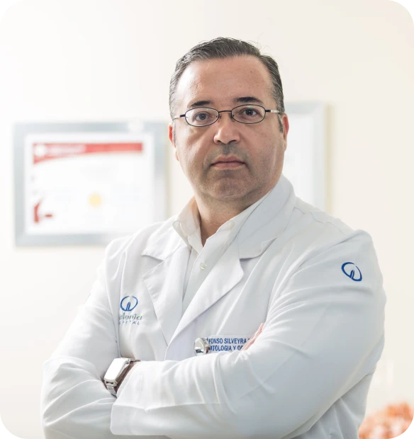

🌿 Historia de AlmaViva
AlmaViva Wellness Center nació del deseo profundo de reconectar al ser humano con su esencia más pura: la salud integral, el equilibrio emocional y la armonía con la naturaleza. Inspirados por la energía sanadora del Caribe Mexicano, un grupo de terapeutas, instructores y apasionados del bienestar decidió crear un espacio sagrado en Cancún donde cuerpo, mente y alma pudieran encontrarse en paz.
Desde nuestros inicios en 2025, hemos trabajado con amor y conciencia para ofrecer un refugio donde las personas se sientan libres de sanar, aprender y crecer. Cada rincón de AlmaViva está diseñado para invitar a la introspección, al descanso y a la transformación. Nuestra comunidad se ha ido formando con el tiempo: desde viajeros espirituales hasta habitantes locales que encuentran en AlmaViva un segundo hogar.
✨ Misión
Ofrecer un espacio holístico que promueva el bienestar integral a través de prácticas conscientes como yoga, meditación, terapias naturales y talleres transformadores. Nos dedicamos a acompañar a cada persona en su camino hacia el equilibrio físico, emocional y espiritual, respetando su autenticidad y ritmo personal.
🌟 Visión
Ser un referente de bienestar auténtico en Latinoamérica, reconocido por nuestra calidez humana, profesionalismo y enfoque integral. Aspiramos a expandir la conciencia colectiva, crear comunidad y sembrar semillas de paz, salud y amor en cada ser que cruza nuestras puertas.
💎 Nuestros valores
- Empatía: Escuchamos y entendemos a cada persona desde su esencia.
- Profesionalismo: Contamos con un equipo capacitado y comprometido.
- Respeto: Honramos cada historia y proceso personal.
- Pasión: Amamos lo que hacemos y lo transmitimos en cada experiencia.
- Autenticidad: Ofrecemos bienestar con el corazón abierto.
🧘♀️ Nuestro equipo
María López

Instructora de Yoga
"El cuerpo es el templo donde habita la paz."
Jorge Ramírez
Terapeuta Holístico
"Sanar es recordar quién eres."
Laura Díaz
Fundadora
"AlmaViva nació del amor por la vida consciente."
Ramiro Olmos

Instructor de Meditación
"La calma no es externa, nace de tu interior."
Andrés Herrera

Nutricionista Holístico
"Alimentarse bien es una forma de amor propio."